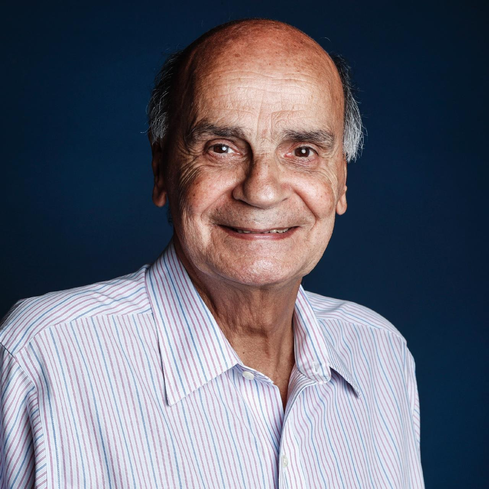

Sobre
Eu me chamo Antônio Drauzio Varella e nasci em 3 de maio de 1943 na cidade de São Paulo. Sou um médico oncologista, cientista e escritor brasileiro, formado pela Universidade de São Paulo (USP), na qual fui aprovado em 2° lugar, sou conhecido por popularizar a informação médica no Brasil, através de aparições em programas de rádio, TV e pela Internet, com um site e canal no Youtube. Fui também um dos fundadores da Universidade Paulista e da Rede Objetivo, onde lecionei física e química durante muitos anos. Também sou um crítico da medicina alternativa.
Já fui ex-diretor do serviço de Imunologia do Hospital do Câncer. Dirigi, de 1990 a 1992, o serviço de Câncer do Hospital do Ipiranga. Sou autor de 15 livros, também sou um dos fundadores do Curso Objetivo. Um dos pioneiros no tratamento da AIDS no Brasil, liderei diversas campanhas de conscientização sobre a doença. Trabalhei como médico voluntário na Casa de Detenção do Carandiru entre 1989 e 2002. Atualmente faço o mesmo trabalho na Penitenciária Feminina de São Paulo.